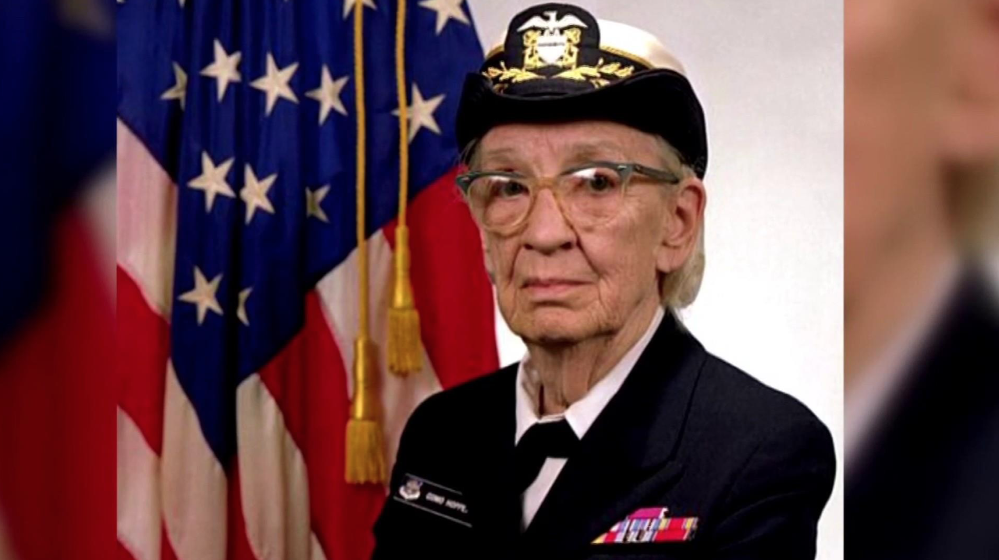

Rear Admiral Grace Hopper
The woman who gave us software

Literally found the first "bug"
- 1934 - In 1934, she earned a Ph.D. in mathematics from Yale under the direction of Øystein Ore.
- 1959 - In 1959, she participated in the CODASYL consortium, which consulted Hopper to guide them in creating a machine-independent programming language.
- 1966 - In accordance with Navy attrition regulations, Hopper retired from the Naval Reserve with the rank of commander at age 60 at the end of 1966.
- 1971 - The annual Grace Murray Hopper Award for Outstanding Young Computer Professionals was established in 1971 by the Association for Computing Machinery.
- 1986 - She retired from the Navy in 1986 and found work as a consultant for the Digital Equipment Corporation, sharing her computing experiences.
- 1988 - Grace Hopper was awarded IEEE Emanuel R. Piore Award in 1988.